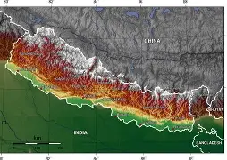
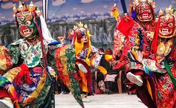
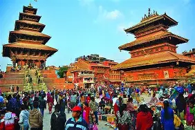
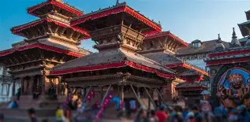

Descubra a cultura, geografia e beleza do Nepal
O Nepal é um pequeno país localizado no sul da Ásia, entre a Índia e a República Popular da China (Tibete).
O seu tamanho contrasta com uma superpopulação estimada entre 22 e 23 milhões de habitantes. O relevo do país é composto em grande parte pelas altas montanhas da cordilheira dos Himalaias, com vários picos de mais de 6 000 m de altitude, destacando-se, entre estes, o Monte Everest, o ponto mais alto da Terra. Juntamente com o Everest, o Nepal abriga oito das quatorze montanhas que possuem mais de 8 000 m de altitude. As demais montanhas são: o Kanchenjunga, o Lhotse, o Makalu, o Cho Oyu, o Dhaulagiri I, o Manaslu e o Annapurna I.
O Nepal é conhecido como "o topo do mundo".[37] A capital do país, Catmandu, tem aproximadamente 800 mil habitantes. O país divide-se em 14 estados e 75 distritos. A maior parte da população vive em vilas nas montanhas, que são demarcadas por regiões e números. O clima é frio, porém somente nas montanhas há incidência de neve.
O Nepal pode ser dividido em três regiões geográficas distintas: o Terai ao sul, com altitudes entre 400 e 1 000 m, geográfica e culturalmente semelhante à Índia; a região dos Vales, com altitudes entre 1 000 e 2 000 m, onde está Katmandu e Pokhara; e a região dos Himalaias, com altitudes superiores a 2 000 m.[38]
Kathmandu
Ásia
Monte Everest
A cultura nepalesa é muito variada, refletindo as diferentes origens étnicas de seu povo. Como cerca de 80% da população é hinduísta, a cultura nepalesa tem muitos costumes, crenças e tradições hindus. Entretanto a influência do budismo, que abrange cerca de 10% da população, é grande. As duas religiões coexistem e ritos hinduístas e budistas que acompanham o nascimento, o casamento e a morte são praticados conjuntamente.
O folclore é uma parte integrante da sociedade nepalesa. Contos folclóricos estão enraizados na realidade do dia a dia. Contos de amor e de batalhas, bem como demônios e fantasmas, refletem o estilo de vida local, bem como suas culturas e crenças. Muitos contos folclóricos nepaleses são contados mediante a integração de dança e música.


A cultura nepalesa é muito variada, refletindo as diferentes origens étnicas de seu povo. Como cerca de 80% da população é hinduísta, a cultura nepalesa tem muitos costumes, crenças e tradições hindus. Entretanto a influência do budismo, que abrange cerca de 10% da população, é grande. As duas religiões coexistem e ritos hinduístas e budistas que acompanham o nascimento, o casamento e a morte são praticados conjuntamente.
O folclore é uma parte integrante da sociedade nepalesa. Contos folclóricos estão enraizados na realidade do dia a dia. Contos de amor e de batalhas, bem como demônios e fantasmas, refletem o estilo de vida local, bem como suas culturas e crenças. Muitos contos folclóricos nepaleses são contados mediante a integração de dança e música.
